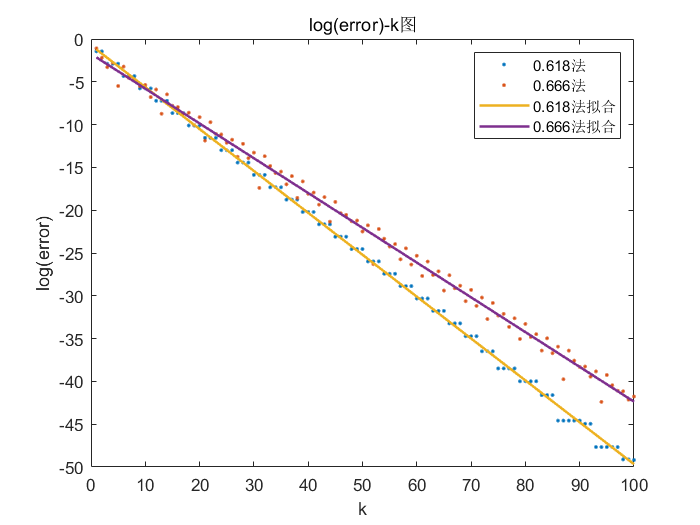

0.618法和0.666法的比较
一、实验要求

二、实验原理
- 0.618法

- 0.666法
在0.618法的基础上，将每次取的点用的常数改成。由于区间每次迭代区间变为原来的倍，因此收敛速度应约为两者相差不大。注意的是，由于没有黄金分割的性质，每次迭代需要采样两次，因而从采样的角度上考察0.666法是非常慢的。
3. matlab可以很方便地用于做数值计算和绘图
三、实验问题
- 用折线图会显得很乱。分析原因：虽然区间确实减小的，但是区间仅仅是error的一个上界（因为区间内两点距离小于等于区间大小）。如0.618法前两次迭代得到的结果一样。因而error的图像是不一定平滑的。所以考虑将其改成点图。

- 画成点图则由于理论上收敛速度都是指数，指数的变化率变化很快而点间距是固定的，导致了看上去很稀疏。而且指数函数也不好判断是否是指数函数，所以对error取log，这样如果画出是均匀的线性则验证了理论的正确性。

- 得到图像相对美观，可以很直观的看出是线性的，可以对其进行线性函数拟合从而验证理论正确性。另外对于采样数，0.618法平均每迭代一次约采样一次，0.666法平均每迭代一次采样两次，因而理论上设采样数s，则0.618法关于采样数的收敛速度约为，0.666法关于采样数的收敛速度约为。两者同样是指数函数，可以用同样的方法验证理论的正确性。

- 前面的每个图最后一个点都会和理论偏差很大，导致最后拟合函数也偏下。原因是代码里的一个小bug，将最后一个函数值记作了解。

四、实验代码
%hw2.m km = 100; [x_opt, sampling_opt] = optimization_method(@f, -1, 1, km); [x_frac23, sampling_frac23] = frac23_method(@f, -1, 1, km); error_opt = abs(x_opt); error_frac23 = abs(x_frac23); log_error_opt = log(error_opt); log_error_frac23 = log(error_frac23); k = 1:km; P_log_error_opt_k = polyfit(k, log_error_opt, 1) P_log_error_frac23_k = polyfit(k, log_error_frac23, 1) P_log_error_opt_sampling = polyfit(sampling_opt, log_error_opt, 1) P_log_error_frac23_sampling = polyfit(sampling_frac23, log_error_frac23, 1) X1 = [k; ones(1, km)]; X2 = [1:2 * km; ones(1, 2 * km)]; figure; plot(log_error_opt, '.'); hold on; plot(log_error_frac23, '.'); plot(P_log_error_opt_k * X1, 'Linewidth', 1.5); plot(P_log_error_frac23_k * X1, 'Linewidth', 1.5); hold off; legend('0.618法', '0.666法', '0.618法拟合', '0.666法拟合'); xlabel('k'); ylabel('log(error)'); title('log(error)-k图'); figure; plot(sampling_opt, log_error_opt, '.'); hold on; plot(sampling_frac23, log_error_frac23, '.'); plot(P_log_error_opt_sampling * X2, 'Linewidth', 1.5); plot(P_log_error_frac23_sampling * X2, 'Linewidth', 1.5); hold off; legend('0.618法', '0.666法', '0.618法拟合', '0.666法拟合'); xlabel('sampling'); ylabel('log(error)'); title('log(error)-sampling图');
%f.m function [y] = f(x) y = x^2/2; end
%optimization_method.m function [x, sampling] = optimization_method(f, x0, x3, km) %f 目标函数 %x0 区间左边界 %x3 区间右边界 %km 最大迭代次数 c = (sqrt(5) - 1) / 2; %常数0.618 k = 1; %第k次迭代 x = zeros(1, km); %记录计算当前步长随迭代次数变化的所有取值 sampling = zeros(1, km);%记录采样数随迭代次数变化的所有取值 x1 = x3 - c * (x3 - x0);%待比较点较小值 x2 = c * (x3 - x0) + x0;%待比较点较大值 f1 = f(x1); f2 = f(x2); sampling(1, k) = 2; while k <= km - 1 if f1 >= f2 x(1, k) = x2; k = k + 1; x0 = x1; x1 = x2; x2 = c * (x3 - x0) + x0; f1 = f2; f2 = f(x2); sampling(1, k) = sampling(1, k - 1) + 1; else x(1, k) = x1; k = k + 1; x3 = x2; x2 = x1; x1 = x3 - c * (x3 - x0); f2 = f1; f1 = f(x1); sampling(1, k) = sampling(1, k - 1) + 1; end end if f1 >= f2 x(1, k) = x2; else x(1, k) = x1; end end
%frac23_method.m function [x, sampling] = frac23_method(f, x0, x3, km) %f 目标函数 %x0 区间左边界 %x3 区间右边界 %km 最大迭代次数 c = 2/3; %常数0.666 k = 1; %第k次迭代 x = zeros(1, km); %记录计算当前步长随迭代次数变化的所有取值 sampling = zeros(1, km);%记录采样数随迭代次数变化的所有取值 x1 = x3 - c * (x3 - x0);%待比较点较小值 x2 = c * (x3 - x0) + x0;%待比较点较大值 f1 = f(x1); f2 = f(x2); sampling(1, k) = 2; while k <= km - 1 if f1 >= f2 x(1, k) = x2; k = k + 1; x0 = x1; x1 = x3 - c * (x3 - x0); x2 = c * (x3 - x0) + x0; f1 = f(x1); f2 = f(x2); sampling(1, k) = sampling(1, k - 1) + 2; else x(1, k) = x1; k = k + 1; x3 = x2; x2 = c * (x3 - x0) + x0; x1 = x3 - c * (x3 - x0); f2 = f(x2); f1 = f(x1); sampling(1, k) = sampling(1, k - 1) + 2; end end if f1 >= f2 x(1, k) = x2; else x(1, k) = x1; end end
四、实验结果
1. error-k图
 拟合得不错。
2. error-sampling图
 拟合得不错。
拟合得不错。
>> hw2 P_log_error_opt_k = -0.4894 -0.7346 P_log_error_frac23_k = -0.4063 -1.7419 P_log_error_opt_sampling = -0.4894 -0.2452 P_log_error_frac23_sampling = -0.2031 -1.7419
其中，0.618法对及的实验值斜率约等于理论值：
>> log((sqrt(5) - 1) / 2) ans = -0.4812
0.666法对实验值斜率约等于理论值：
>> log(2 / 3) ans = -0.4055
0.666法对实验值斜率约等于理论值：
>> log(sqrt(2 / 3)) ans = -0.2027
五、实验反思
- 实验需要仔细检查，找到不合理的地方就是可能出了问题。
- 实验要与理论结合。
- 图像直观很重要。